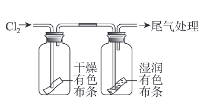
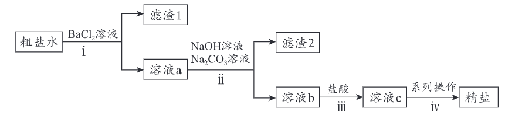
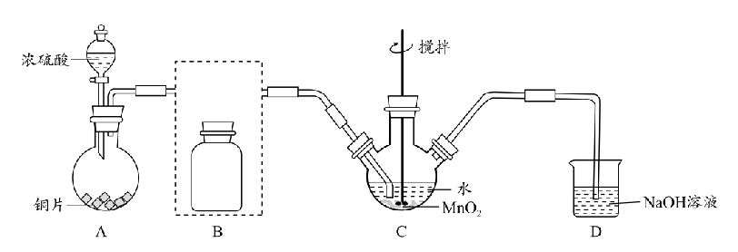
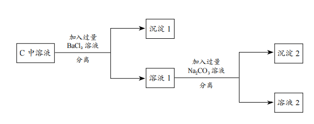
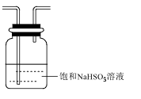

本专题整理自 2026 年 11 月北京海淀、朝阳、育才学校、十五中、一六一中高中化学期中试卷，聚焦判断装置能否达到目的、实验操作顺序、试剂与器材选择等高频实验操作题。前半部分仅保留题目与图示，参考答案与解析统一附于文末。
一、判断实验装置能否达到目的
1. （2026 北京海淀高三上期中·第 5 题）
下列实验中，能达到实验目的的是（ ）
| 选项 | A | B | C | D |
|---|---|---|---|---|
| 目的 | 萃取碘水中的碘 | 配制 溶液 | 比较 、 的非金属性强弱 | 测定锌与稀硫酸反应的速率 |

A: 乙醇和水混溶，无法萃取水中的碘单质
B:容量瓶不可用于溶解[1]
C:应比较最高价氧化物水化物酸性
D:单位时间产生气体体积反映反应速率
2. （2026 北京十五中高三上期中·第 5 题）
下列实验，能达到实验目的的是（ ）

A:洗气瓶里应使用饱和溶液
B:乙酸有挥发性，应用饱和溶液洗气[2]
D:应该先通再通，以增加溶解度[3]
3. （2026 北京朝阳高三上期中·第 8 题）
饱和氯水存在：。下列说法不正确的是（ ）
A. 是非极性分子， 是极性分子
B. 分子中 价电子层上的孤电子对数为 3
C. 可通过右图实验验证 具有漂白性
D. 向 淀粉溶液中滴加少量氯水，溶液变蓝，说明 与 的反应存在限度

D:假设完全转换，生成的同样可以氧化，不能确定为可逆反应[4]
二、实验操作规范与操作顺序
4. （2026 北京朝阳高三上期中·第 10 题）
下列实验的相应操作中，不合理的是（ ）

- A. 探究 的热稳定性：实验结束时，先把导管移出液面，再熄灭酒精灯
- B. 除去苯甲酸中的泥沙：先加热溶解，冷却后再过滤
- C. 验证氨易溶于水且溶液呈碱性：先打开弹簧夹，再挤压胶头滴管
- D. 验证 的还原性：先滴加几滴 溶液，再滴加几滴氯水
正确答案:B
B:分离苯甲酸和泥沙，需要利用苯甲酸“溶解度随温度上升而上升”进行重结晶，应加热溶解，趁热过滤
5. （2026 北京育才学校高三上期中·第 2 题）
下列实验用品的使用不规范的是（ ）
A. 用氨进行喷泉实验时，将圆底烧瓶干燥后，再收集氨气
B. 测溶液的 时，将 试纸用蒸馏水润湿后，再进行测量
C. 在乙醇制乙烯的实验中，将温度计插入反应混合液中，再加热
D. 在滴定实验中，将滴定管洗净后，再用待盛溶液润洗
正确答案:B
B:应使用干燥的pH试纸
6. （2025—2026 北京一六一中高二化学·第 5 题）
用 溶液滴定未知浓度的 溶液。下列说法不正确的是（ ）
A. 酸式滴定管在盛装 溶液前要用该溶液润洗 次
B. 锥形瓶盛装待测 溶液前须干燥
C. 滴定时，边摇动锥形瓶，边注视锥形瓶中溶液的颜色变化
D. 滴定时，若锥形瓶中有液体溅出，测定结果偏低
正确答案:B
B:锥形瓶无需干燥
7. （2025—2026 北京一六一中高二化学·第 8 题）
下列实验操作或结论，不正确的是（ ）

A:盐酸，溶液体积相同，比热容近似与水相同，[5]
三、实验安全、试剂与器材选择
8. （2026 北京朝阳高三上期中·第 5 题）
下列有关实验安全的说法中不合理的是（ ）
A. 做钠在空气中燃烧的实验时，不要近距离俯视坩埚
B. 在用电石制乙炔的实验中，将 溶液缓慢加入到圆底烧瓶时须用长颈漏斗
C. 实验方案中出现“当心烫伤”图标，说明实验中会遇到加热操作或用到温度较高的仪器
D. 中学实验室可将未用完的钠、钾、白磷等放回原试剂瓶
正确答案:B[6]
9. （2026 北京朝阳高三上期中·第 6 题）
下列物质的制备实验中，选用的试剂和反应条件均正确的是（ ）
| 选项 | 物质 | 试剂 | 反应条件 |
|---|---|---|---|
| A | 和水 | 高温 | |
| B | 和稀盐酸 | 常温 | |
| C | 硫酸四氨合铜溶液 | 硫酸铜溶液、氨水 | 常温 |
| D | 乙醇和浓硫酸 | 加热至 |
正确答案:C
A:[7]
B:需要使用浓盐酸[8]
D:140℃制乙醚，170℃制乙烯
10. （2026 北京育才学校高三上期中·第 3 题）
下列物质的制备实验中，选用的试剂和反应条件均正确的是（ ）
| 选项 | 物质 | 试剂 | 反应条件 |
|---|---|---|---|
| A | 和浓硫酸 | 常温 | |
| B | 固体 | 加热 | |
| C | 银氨溶液 | 溶液和氨水 | 常温 |
| D | 固体和稀盐酸 | 加热 |
正确答案:C
A:需要加热
B:不单独用 固体
D:需要浓盐酸
四、综合实验操作与流程探究（大题）
11. （2026 北京朝阳高三上期中·第 16 题，12 分）
除去粗盐中的杂质离子 、 和 ，流程示意图如下。

已知：
- 难溶电解质的 ：，，，，。
- 当溶液中的离子浓度小于 时，认为沉淀完全。
请回答：
- 中发生反应的离子方程式是____________。
- 中需加入过量的 ，检测 是否过量的方法是____________。
- 若加入 后不过滤就加入 、饱和 溶液，会导致提纯后的精盐中存在 ，结合沉淀溶解平衡说明原因：____________。
- 若 中只用 溶液除去 、，会导致____________（填字母）。
a. 沉淀不完全 b. 消耗更多 c. 步骤 中会消耗更多的盐酸 - 按图示流程，滤渣 2 的主要成分有____________。
- 中向烧杯中加入盐酸，使溶液 呈弱酸性。 中“系列操作”的步骤是：
① 将溶液 转移至中；
② 用酒精灯加热，，停止加热。 - 测量发现，精盐中 的质量大于原粗盐中 的质量，原因是____________。
（2）静置后，沿烧杯壁向上层清液中继续滴加 滴 溶液。若溶液不出现浑浊，则表明 已沉淀完全， 过量。
12. （2026 北京海淀高三上期中·第 19 题，13 分）
实验小组研究 与 的反应。
【实验 1】 实验装置如下（夹持装置、A 中加热装置和 C 中冷却装置已略去）。实验结束后，C 中黑色悬浊液最终变澄清，且几乎无色。

- A 中发生反应的化学方程式是____________。
- 将除杂装置 B 补充完整并标明所用试剂。
【实验 2】 为探究 与 的反应产物，实验小组取 C 中溶液，通过加热、抽气除去 后进行下列实验。

后续实验证实：沉淀 1 为 ，沉淀 2 中含有 、。
- 根据以上实验，推测 与 反应的化学方程式____________。
- 验证溶液 1 中 、 已沉淀完全的实验方法：静置后，沿器壁向上层清液中滴加 滴____________（填试剂），若溶液不出现浑浊，则说明已沉淀完全。
【实验 3】 为验证溶液 2 的成分，将溶液 2 蒸干，获得白色粉末，同时产生刺激性气味气体。进一步实验证明白色粉末中含 ，刺激性气味气体中含 。
- 证明白色粉末中含 的实验方法是____________。
- 根据实验 3，推测溶液 2 中存在____________（填序号）。
a. b. c. d. - 实验小组反思：若未将 C 中 去除，溶液 2 蒸干后得到的白色粉末中的 可能来源于 。你是否同意该观点，说明理由：____________。
（4）溶液 （5）取少量白色粉末于试管中，加入足量稀盐酸，再滴加 溶液，产生白色沉淀。
参考答案与解析
第 1 题（2026 海淀高三期中·第 5 题）
答案：D
- A 错误：乙醇与水互溶，不能作萃取碘水中碘的萃取剂（应选 或苯等与水不互溶的溶剂）。
- B 错误：配制一定物质的量浓度溶液时，固体 应在烧杯中溶解并冷却至室温，再转移至容量瓶中，不能直接在容量瓶中溶解。
- C 错误：盐酸具有挥发性且不是 的最高价含氧酸，一方面无法用 与 的酸性比较 、 的非金属性，另一方面挥发出的 也会与澄清石灰水反应。
- D 正确：利用分液漏斗控制稀硫酸加入，通过注射器测定一定时间内收集到 的体积（配合秒表计时），可测定锌与稀硫酸的反应速率。
第 2 题（2026 十五中高三期中·第 5 题）
答案：C
- A 错误：饱和 溶液不仅吸收 ，还会与 反应（），应改用饱和 溶液。
- B 错误：乙酸易挥发，挥发出的乙酸蒸气会直接进入苯酚钠溶液使其变浑浊，干扰碳酸与苯酚酸性的比较（中间缺少除杂装置）。
- C 正确： 与水不互溶且碘在 中的溶解度远大于在水中，可用分液漏斗萃取碘水中的碘。
- D 错误：模拟侯氏制碱法时，由于 极易溶于水，通入 的导管直接插入液面以下会发生倒吸（且应先通 至饱和后再通 ）。
第 3 题（2026 朝阳高三期中·第 8 题）
答案：D
- A 正确： 为对称直线形非极性分子， 为 V 形极性分子。
- B 正确： 结构式为 ， 原子最外层 7 个电子，形成 1 对共用电子对后剩余 3 对孤电子对。
- C 正确：干燥氯气不能使干燥有色布条褪色，而湿润有色布条褪色，说明起漂白作用的是 与水反应生成的 。
- D 错误： 本身也具有强氧化性，能直接氧化 生成 使淀粉变蓝，无法据此证明 与 的反应存在限度。
第 4 题（2026 朝阳高三期中·第 10 题）
答案：B
- A 合理：加热固体结束后，先将导管移出澄清石灰水液面，再熄灭酒精灯，防止冷水倒吸炸裂热试管。
- B 不合理：苯甲酸在水中的溶解度随温度升高显著增大，若加热溶解后冷却再过滤，苯甲酸会大量结晶析出并随泥沙一起留在滤纸上，造成损失；正确操作是加热溶解后趁热过滤。
- C 合理：先打开弹簧夹，再挤压胶头滴管使水进入烧瓶，氨气溶于水导致瓶内压强骤降，酚酞溶液被吸入形成红色喷泉。
- D 合理：先加 溶液无明显现象（排除原溶液中 干扰），再滴加氯水后溶液变红，可验证 被氯水氧化为 ，体现其还原性。
第 5 题（2026 育才高三期中·第 2 题）
答案：B
- A 规范：氨气极易溶于水，收集氨气的圆底烧瓶必须干燥，否则氨气溶于水无法形成较大压强差。
- B 不规范：用蒸馏水润湿 试纸会稀释待测溶液，可能改变溶液的 （中性溶液无影响，酸性或碱性溶液测定结果会偏向 7）。
- C 规范：乙醇与浓硫酸制乙烯需控制反应液温度在 ，温度计水银球必须插入反应混合液液面以下。
- D 规范：滴定管洗净后需用待盛装的标准液或待测液润洗 次，避免管内壁残留水稀释溶液。
第 6 题（2025—2026 一六一中高二·第 5 题）
答案：B
- A 正确：酸式滴定管使用前需用待盛装的 标准液润洗 次。
- B 不正确：锥形瓶内残留少量蒸馏水不改变待测 的物质的量，因此无需干燥；若用待测液润洗反而会导致结果偏高。
- C 正确：滴定时左手控制活塞，右手摇动锥形瓶，眼睛注视锥形瓶内溶液颜色变化以准确判断终点。
- D 正确：锥形瓶中待测液溅出，消耗标准液 的体积偏小，测定结果偏低。
第 7 题（2025—2026 一六一中高二·第 8 题）
答案：A
- A 不正确：测量中和反应的反应热时，应分别测量混合前酸溶液和碱溶液的温度取平均值作为初始温度，混合后立即搅拌并记录最高温度，不能在混合后测初始温度。
- B 正确：组装好测定锌与稀硫酸反应速率的装置后，加入硫酸后迅速关闭分液漏斗活塞，防止生成的 从分液漏斗逸出影响体积测量。
- C 正确：赶碱式滴定管乳胶管中气泡时，应将尖嘴向上弯曲，挤压玻璃珠上方乳胶管使溶液喷出以排出气泡。
- D 正确：两支试管溶液总体积均为 ，左侧加入 溶液使 增大而颜色更深，可证明增大反应物浓度平衡向右移动。
第 8 题（2026 朝阳高三期中·第 5 题）
答案：B
- A 合理：钠燃烧剧烈且可能溅出高温熔融物，不能近距离俯视坩埚。
- B 不合理：电石与水反应剧烈，需要控制 溶液的滴加速度；长颈漏斗无法控制液体滴加速率（且容易漏气），应改用分液漏斗。
- C 合理：该图标为“当心烫伤”，提示实验涉及加热或高温仪器。
- D 合理：钠、钾、白磷均极易反应且危险，实验剩余的钠、钾、白磷需放回原试剂瓶，不可随意丢弃。
第 9 题（2026 朝阳高三期中·第 6 题）
答案：C
- A 错误： 与水蒸气在高温下反应生成的是 和 ，不是 。
- B 错误： 需与浓盐酸在加热条件下反应才生成 ，与稀盐酸在常温下不反应。
- C 正确：常温下向 溶液中滴加氨水先生成 沉淀，继续滴加过量氨水沉淀溶解生成 （硫酸四氨合铜溶液）。
- D 错误：乙醇和浓硫酸在 时主要发生分子间脱水生成乙醚，制取乙烯（）需迅速升温至 。
第 10 题（2026 育才高三期中·第 3 题）
答案：C
- A 错误： 与浓硫酸反应需要加热，常温下不反应。
- B 错误：加热 固体分解生成的 和 在试管口遇冷会重新化合生成 ，实验室制 常用 与 固体共热。
- C 正确：常温下向 溶液中滴加稀氨水至生成的沉淀恰好溶解，即可制得银氨溶液。
- D 错误： 固体需与浓盐酸共热才生成 ，与稀盐酸不反应。
第 11 题（2026 朝阳高三期中·第 16 题）
参考答案：
- 静置后，沿烧杯壁向上层清液中继续滴加 滴 溶液。若溶液不出现浑浊，则表明 已沉淀完全， 过量。
- ，加入饱和 溶液后，生成 ， 浓度降低，平衡正移， 进入溶液中，导致提纯后的精盐中存在 。
- bc
- 、、
- ① 蒸发皿 ② 同时用玻璃棒不断搅拌，当蒸发皿中出现较多固体时，停止加热。
- 引入 、 和 引入
第 12 题（2026 海淀高三期中·第 19 题）
参考答案：
- 补充洗气瓶（长进短出），瓶内盛放饱和 溶液（用于吸收挥发出的酸雾等杂质，同时减少 溶解）：

- 溶液
- 取少量白色粉末于试管中，加入足量稀盐酸，再滴加 溶液，产生白色沉淀。
- c
- 同意： 进入溶液 1，与 反应后转化为 进入溶液 2，蒸干时被 氧化为 。
（或不同意： 进入溶液 1，与 、 反应后转化为 进入沉淀 2，溶液 2 中不存在大量 。）
批注与补充
- 第 1 题 B 补充：配制一定物质的量浓度溶液时，固体 应先在烧杯中溶解并冷却至室温，再转移至容量瓶中定容。↩
- 第 2 题 B 补充：应在碳酸钠溶液与苯酚钠溶液之间加装盛有饱和 溶液的洗气瓶，除去挥发出的乙酸蒸气，避免干扰碳酸与苯酚酸性的比较。↩
- 第 2 题 D 补充错因：除通气顺序外，图中通入 的导管直接插入液面以下，由于 极易溶于水，会发生倒吸。↩
- 第 3 题 D 思路点拨：判断准确。无论反应是否可逆、 是否完全转化，体系中具有强氧化性的 或 均能氧化 使淀粉- 变蓝，因此该现象无法证明反应存在限度。↩
- 第 7 题 A 补充操作要点：初始温度 必须在混合前分别测量酸、碱溶液温度并取平均值；混合后立即搅拌并记录最高温度，不能在混合后再测初始温度。↩
- 第 8 题 B 补充解析：电石与水反应剧烈，需控制饱和食盐水的滴加速率；长颈漏斗无法控制滴加速率且易漏气，应改用分液漏斗。↩
- 第 9 题 A 补充配平：。↩
- 第 9 题 B 补充条件： 制取 既需要浓盐酸，还需要加热（），常温下不反应。↩
正在加载评论…